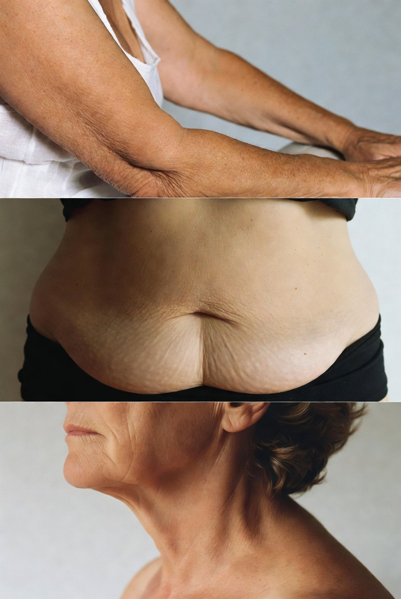
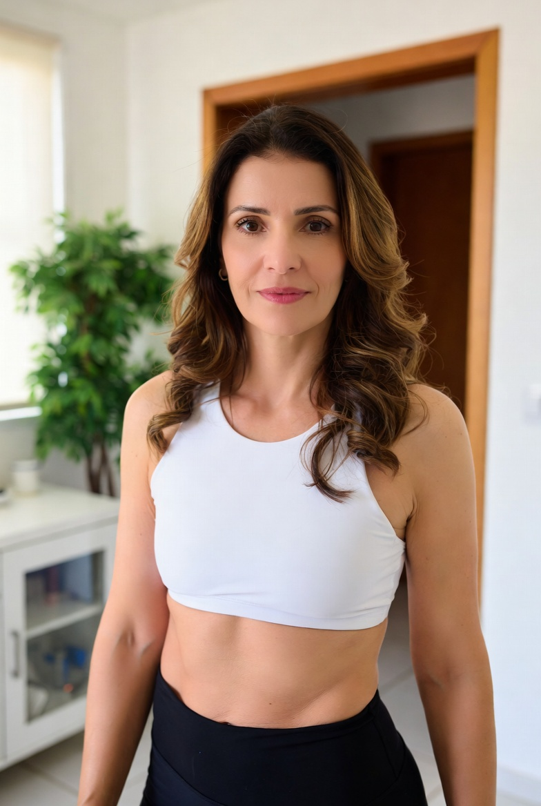
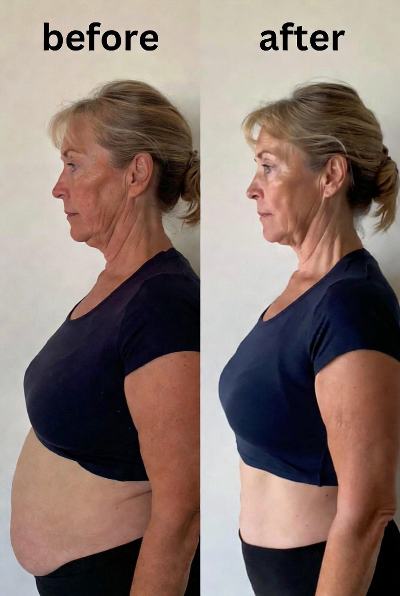
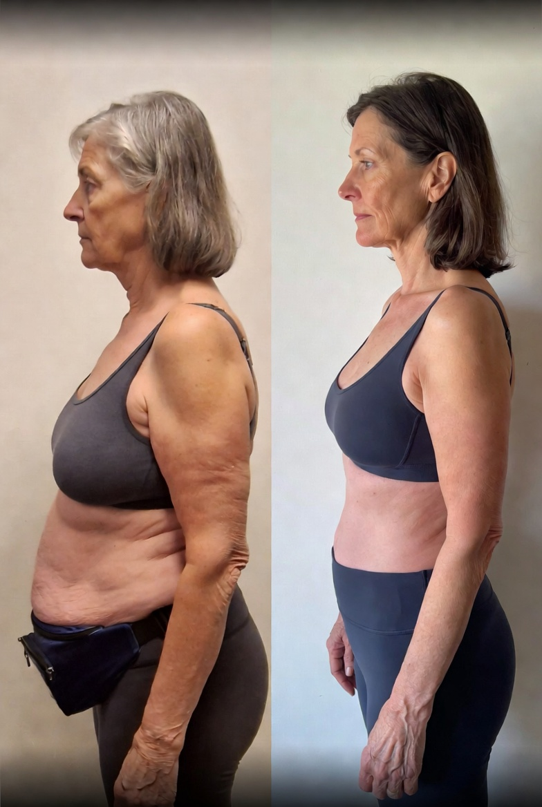
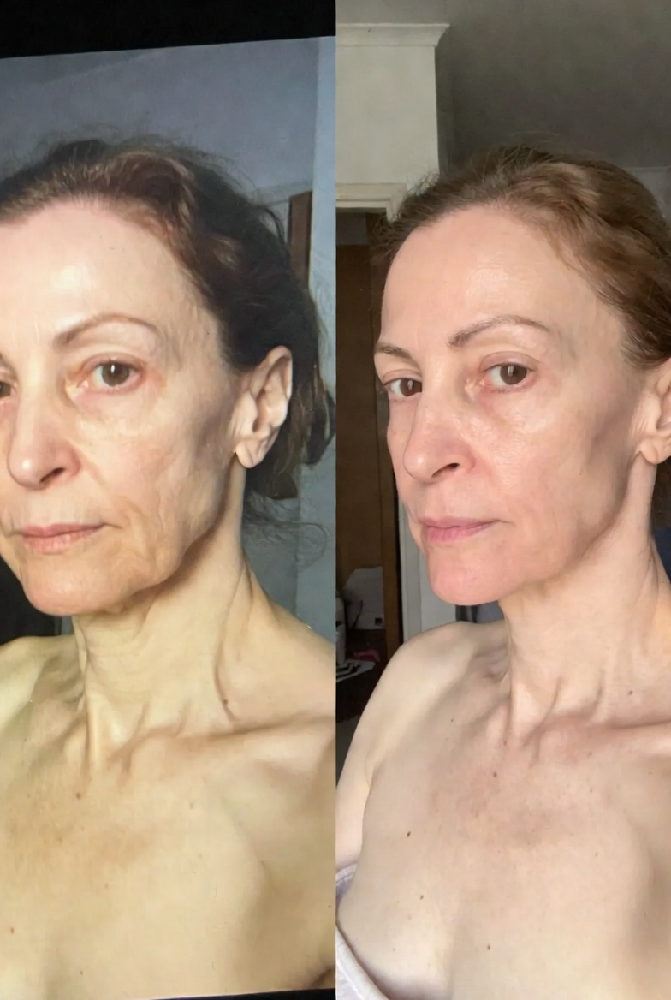
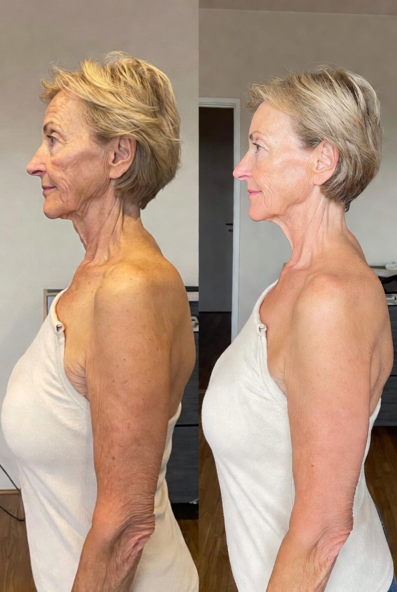

Sabe por que depois dos 50 o seu corpo fica mole, flácido, com pochete crescendo e os braços molengas — mesmo quando você se cuida?
A culpa NÃO é da idade. Não é da menopausa. E não é falta de força de vontade.
É de UMA coisa silenciosa que está acontecendo dentro do seu corpo nesse exato momento — e que, se não for revertida agora, vai te deixar dependente dos outros depois dos 70.
Faça o teste de 2 minutos e descubra o estado REAL do seu corpo + o protocolo certo pra reverter.
- Descubra o motivo silencioso por trás do corpo mole e flácido depois dos 50
- Entenda por que caminhada, pilates, funcional e hidroginástica NÃO resolvem (e o que resolve)
- Receba seu diagnóstico personalizado e o protocolo certo pra sua fase hormonal
Quando você se olha no espelho hoje, com o que você MAIS se identifica?
Seja honesta. Pode marcar quantas opções quiser — quanto mais marcar, mais preciso fica o seu diagnóstico.
💔 Eu te entendo.
O que você marcou tem UM nome só:
A partir dos 30 anos, a mulher perde 1% de massa muscular por ano.
Na menopausa, isso TRIPLICA — chega a 3% ao ano.
Resultado:
🔴 Aos 50 anos, você já perdeu até 30% da sua massa muscular.
🔴 Aos 60 anos, até 40%.
É por isso que seu corpo está mudando. É por isso que nada do que você tentou funcionou. E é por isso que o tempo está jogando contra você.
Pra calcular EXATAMENTE quanta massa muscular você já perdeu, me diz: qual a sua idade?
🚨 Atenção. Isso é sério.
Com [idade], você já pode ter perdido até:
Você está no ponto crítico — agir agora muda tudo.
Sem massa muscular, é ladeira abaixo: o corpo fica frágil, as dores aumentam, e o risco de sarcopenia, osteoporose, diabetes, AVC, infarto e até Alzheimer dispara.
⬇ Quanto MENOS massa muscular → MAIS doença.
⬆ Quanto MAIS massa muscular → MAIS saúde, MAIS firmeza, MAIS autonomia.
E em relação à menopausa, você diria que está:
⚠️ Isso muda TUDO no seu caso.
A menopausa não é só sobre calor e oscilação de humor.
Nessa fase, a queda do estrogênio acelera a perda de massa muscular e multiplica o acúmulo de gordura na barriga — aquela pochete teimosa que não sai com NENHUMA dieta.
É por isso que mulheres na sua fase, mesmo comendo "certo", veem o corpo derreter ano após ano.
A boa notícia: existe UM tipo de treino que reverte isso. E você está prestes a descobrir.
O que você já tentou para mudar seu corpo? (marque tudo que tentou)
💔 Você marcou várias opções — e provavelmente não viu o resultado que esperava.
A verdade que ninguém te conta:
❌ Caminhada NÃO constrói massa muscular
❌ Pilates e funcional NÃO geram firmeza real
❌ Hidroginástica NÃO reverte sarcopenia
❌ Treinos online genéricos NÃO consideram seu corpo maduro
❌ Remédios SEM treino de força só pioram a flacidez
✅ Existe UM único tipo de treino que funciona depois dos 50 — e em algumas etapas você vai descobrir qual é.
Qual o seu MAIOR medo em relação ao envelhecimento?
Seja honesta — é só você e eu aqui.
🥺 Eu sei que isso dói.
Sabe quantas mulheres entre 70 e 80 anos hoje dependem de outra pessoa pra tomar banho, ir ao banheiro ou subir uma escada?
Isso poderia ter sido evitado com UMA única coisa: massa muscular preservada a partir dos 50.
Mas calma — você ainda está em tempo. E o teste vai te mostrar exatamente o caminho.
Você tem alguma limitação física ou diagnóstico?
Pode marcar mais de uma. Isso me ajuda a adaptar seu protocolo com segurança.
✅ Boa notícia.
Independente do que você marcou, o método que vou te mostrar JÁ FUNCIONOU para mulheres com:
→ Artrite reumatoide
→ Fibromialgia
→ Hérnia de disco
→ Osteoporose
→ Dores em joelho, coluna e ombro
Sandra Vilela nunca teve uma única aluna machucada em 12 anos. Você não vai ser a primeira.
Quanto tempo por dia você tem disponível para se cuidar?
Onde você prefere treinar?
Você tem em casa algum desses equipamentos?
Pode marcar mais de um. Se não tiver nenhum, sem problema — é barato e adaptamos.
Qual é o seu objetivo número 1 nos próximos 90 dias?
Em quanto tempo você quer ver resultado no espelho?
Ótimo! Estou quase montando seu Protocolo 3F personalizado.
Como você prefere que eu te chame?
Quase lá, [Nome]!
Em qual e-mail você quer receber seu diagnóstico e protocolo? Eu envio uma cópia pra você acessar a qualquer momento.
🔒 Seu email está 100% seguro. Nunca enviaremos spam.
Aguarde, [Nome]...
Estou montando seu Protocolo 3F personalizado com base nas suas respostas.
🎯 [Nome], seu diagnóstico está pronto.
Você está perdendo massa muscular em ritmo acelerado. Seu corpo está pedindo SOCORRO por estímulo de força.
Quem vai te guiar nesse caminho:

Especialista em Treinamento de Força para Mulheres 50+
12 anos de experiência • +10 mil alunas transformadas
"Aos 47 anos eu tinha um corpo que não reconhecia. Um ortopedista me disse que eu ia ser uma idosa dependente antes dos 70."
"Eu não aceitei. Estudei tudo sobre treino de força pra mulher madura, me especializei, apliquei em mim mesma. Em 6 meses meu corpo mudou. Hoje, aos 58, tenho o corpo mais forte da minha vida."
"E já ajudei +10 mil mulheres a fazerem o mesmo."
A solução para o seu caso é o Método 3F
O ÚNICO método criado exclusivamente para mulheres 50+, adaptado aos 3 tipos de corpo maduro.
Força
Treino de musculação adaptado pro corpo maduro, em casa, sem risco de lesão.
Firmeza
Protocolo nutricional anti-flacidez e anti-inflamatório, por faixa de peso.
Flexibilidade
Mobilidade articular pra acabar com dores e proteger suas articulações.
Como você vai receber tudo isso, [Nome]:
- Acesso pelo aplicativo (celular + TV — parecido com Netflix)
- Protocolo de Treino e Alimentação 3F Semanal: 4 treinos por semana de ~30 minutos cada
- Roteiro pronto, passo a passo, com demonstração visual de cada exercício
- Plano Nutricional Densa 50+ por faixa de peso e objetivo
- Rotina Anti-Dor de mobilidade e equilíbrio
- Desafio 7 Dias Desinflama pra começar com o pé direito
Mulheres como você que já transformaram com o Método 3F:

"Ia gastar R$ 22 mil em abdominoplastia. Antes de operar, decidi tentar o Programa Renascimento. Em 3 meses transformei meu corpo em casa, sem cirurgia."

"Estava com medo de começar Mounjaro mas via como única saída. Encontrei o Método 3F, tentei antes do remédio. Perdi 18kg, recuperei minha saúde — sem precisar do remédio."

"Estava entrando em depressão pela aparência. Em 3 meses no Programa Renascimento, transformei o corpo e voltei a usar biquíni depois de 8 anos."

"Achei que era tarde demais. Hoje, com 79 anos, estou ganhando músculo e me sentindo uma menina. O problema nunca foi a idade — era o método."
O que tudo isso valeria separado?
| Personal especializada (3 meses) | R$ 3.600 |
| Programa Nutricional personalizado | R$ 450 |
| Plano de Mobilidade | R$ 250 |
| Desafio Desinflama | R$ 197 |
| VALOR TOTAL | R$ 4.497 |
Valor cheio do Programa Renascimento: R$ 297
[Nome], hoje seu acesso é por apenas
à vista — ou 12x de R$ 9,86 no cartão
6 meses do Protocolo 3F no lugar dos 3 meses padrão + bônus liberados
30 dias de Garantia Incondicional
Você entra hoje, testa o protocolo por 30 dias. Se não sentir diferença no seu corpo e na sua disposição, devolvemos 100% do seu dinheiro. Sem burocracia, sem perguntas.
Você não tem absolutamente NADA a perder.
Perguntas que outras alunas já fizeram:
Obrigada por participar!
O Programa Renascimento foi desenvolvido especificamente para mulheres a partir dos 40 anos, com foco em quem já está sentindo os efeitos da perda de massa muscular e da menopausa.
Se ainda assim você quiser continuar, é só clicar abaixo. Caso contrário, indicamos buscar uma orientação especializada para sua faixa etária.